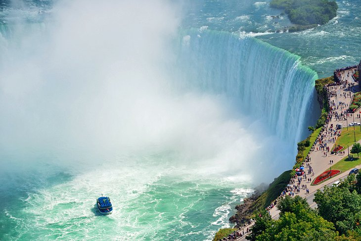
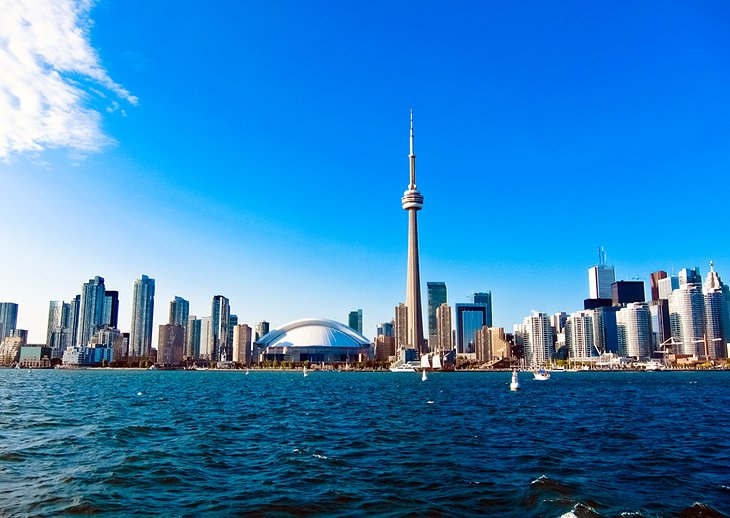
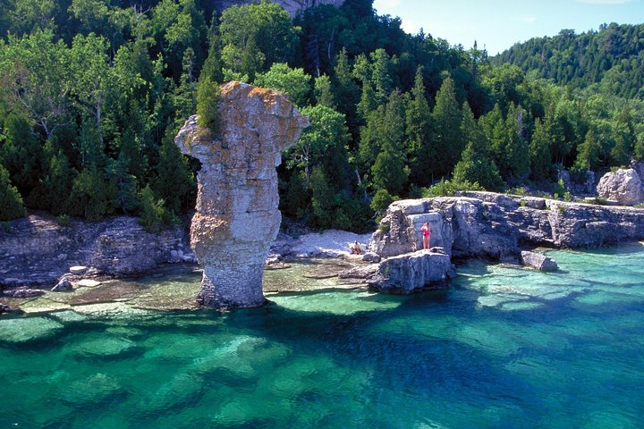

1. Niagra Falls |
Niagara Falls is Canada's most internationally recognized attraction, visited by millions of tourists each year.
The falls are located right at the city of Niagara Falls, making them easy to visit. It's possible to walk down the main tourist strip in Niagara Falls, an outrageous spectacle in itself, to the edge of the gorge, where you'll find great views all along the walkway overlooking the river and the falls.
By car, the trip from Toronto takes about 1.5 hours.
|
2. Toronto's CN Tower |
The CN Tower is one of Canada's most iconic structures, standing tall along the Toronto skyline. The 553-meter tower is lit up at night and can be seen from all over the city and surroundings at any time of day or night, but visitors will likely want to take a trip up the tower to fully experience it.
The tower is located in the heart of downtown Toronto, and at the base is the new Ripley's Aquarium and Rogers Centre
An elevator allows access to the observation deck and restaurant, located about three quarters of the way to the top. The view is astounding, looking out over the city and Lake Ontario. On clear days, it's possible to see all the way to the plume of mist rising off Niagara Falls. In the evening, looking out over the sparkling city lights is also an impressive sight.
|
3. Flowerpot Island |
A trip to Flowerpot Island is one of the best experiences in Fathom Five National Marine Park! The island is famous for its natural "flowerpot" rock pillars, caves, historic light station and rare plants. Most visitors take a tour boat from the town of Tobermory to spend a half or full day on the island hiking the trails, viewing the scenery, picnicking or swimming.
Just 6.5 kilometers off the coast of Tobermory lies Flowerpot Island. This island is one of Canada’s most fascinating natural attractions. Flowerpot Island is famous for its natural sea stacks, also known as the “flowerpots”. Also, Flowerpot Island offers adventurers an opportunity to explore caves, hiking trails, a historic light station and variety of rare plants. While the island is only accessible only by boat, Flowerpot Island is the only island in Fathom Five National Marine Park with campsites and hiking trails.
|